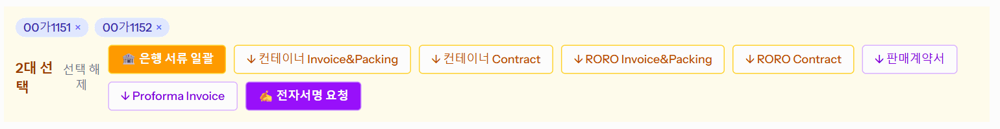
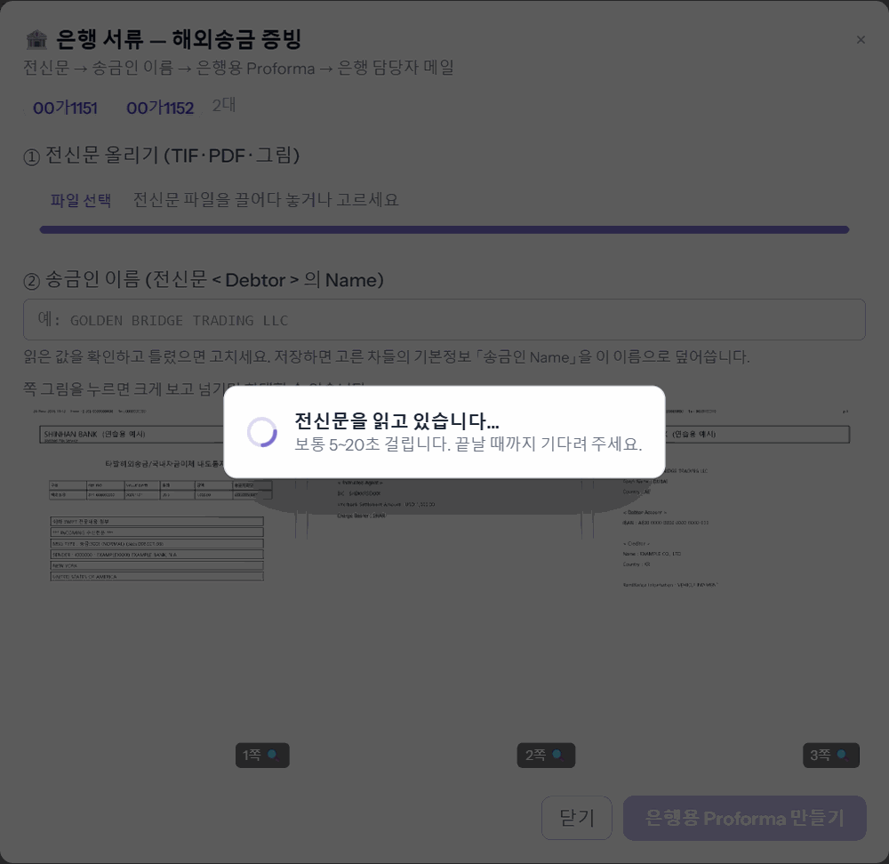
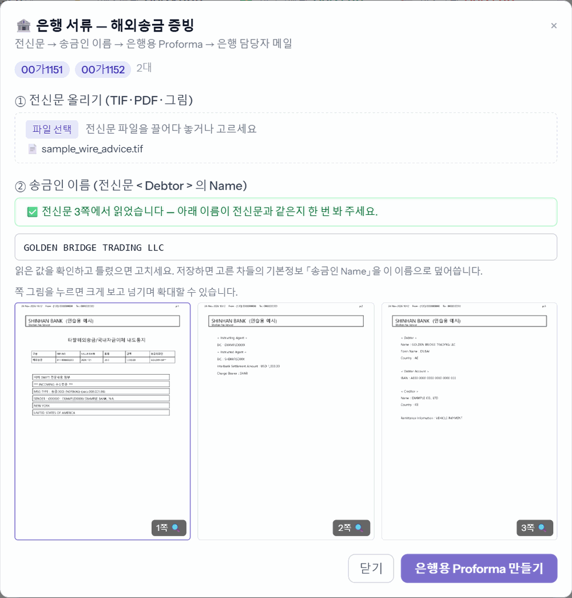
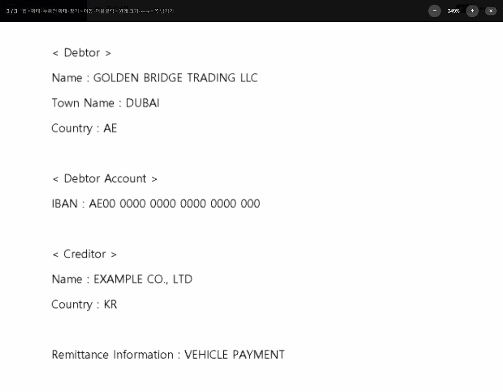
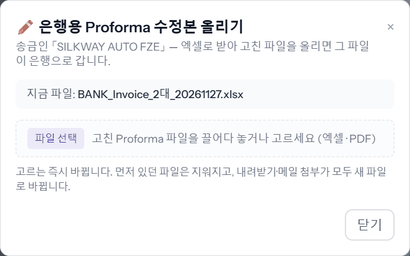
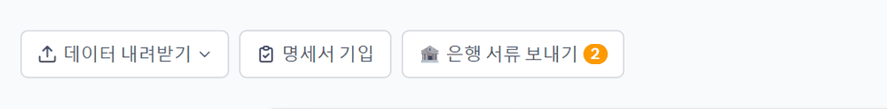
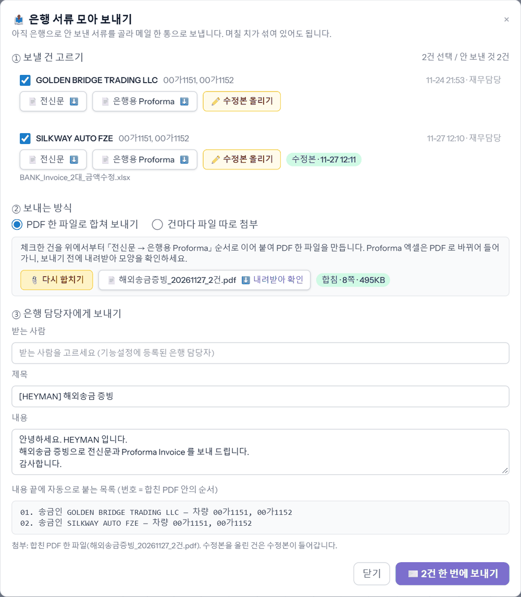
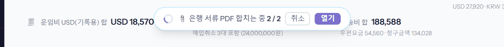

바이어가 해외송금을 보내면 은행이 「타발해외송금 내도통지」(전신문)를 팩스·메일로 보내옵니다. 이 전신문을 올리면 ERP 가 송금인 이름을 읽어 차의 기본정보에 넣고, 이름 칸만 송금인으로 바꾼 은행용 Proforma 를 만들어 은행 담당자에게 메일로 보냅니다. 판매탭 입금 줄의 전신문 칸과는 별개입니다. 예시 차량 00가1151 · 00가1152, 예시 전신문은 연습용(가짜 이름)입니다.
① 차를 고르고 [은행 서류]
1단계
한 대는 차 창 「서류」 탭의 [은행 서류], 여러 대는 목록에서 체크 → [은행 서류 일괄]
송금 한 건이 여러 대 값이면 그 차들을 같이 체크합니다. 같은 바이어 · 같은 통화 차끼리만 묶이고, 한 번에 최대 30대입니다.

② 전신문 올리기 — 송금인 이름 읽기
2단계
전신문 파일(TIF · PDF · 그림)을 끌어다 놓거나 고릅니다
은행 팩스(TIF)는 글자가 없는 그림이라, 회사 GPU PC 가 그림을 보고 이름을 읽습니다. 보통 5~20초 걸리고, 그동안은 「전신문을 읽고 있습니다」 창이 떠서 다른 버튼이 눌리지 않습니다. 끝날 때까지 기다리면 됩니다.

3단계
읽은 이름을 확인합니다 — 틀렸으면 칸을 고칩니다
이름은 전신문 3쪽 「< Debtor >」 아래 Name 줄에서 읽습니다. 초록 줄이 뜨면 읽은 것이고, 이름은 제안이니 아래 쪽 그림과 한 번 비교합니다. GPU PC 가 꺼져 있거나 못 읽으면 칸이 비어 있으니 직접 적습니다. 글자가 살아 있는 PDF 는 GPU 없이 바로 읽습니다.

4단계
쪽 그림을 누르면 크게 보고 넘기며 확대합니다
기본탭 사진 창과 같습니다 — ‹ › 또는 키보드 ←→ 로 쪽을 넘기고, 마우스 휠이나 그림을 한 번 누르면 바로 확대됩니다. 확대한 채로 끌면 옮겨지고, 더블클릭하면 원래 크기, Esc 는 보기 창만 닫습니다.

③ 은행용 Proforma 만들고 은행에 보내기
5단계
[은행용 Proforma 만들기] → 받는 사람을 골라 [은행으로 보내기]
누르는 순간 고른 차들의 기본정보 「송금인 Name」이 이 이름으로 바뀌고, 은행용 Proforma(일반 Proforma 와 같고 Name 칸만 송금인)가 만들어집니다. 전신문·Proforma 는 [⬇ 내려받기]로 미리 열어 볼 수 있습니다. 은행용 Proforma 는 엑셀 파일이라 내려받아 금액·문구를 고칠 수 있고, 금액 칸은 소수점 두 자리(예: $9,000.50)까지 보이고, SUB TOTAL · TOTAL · BALANCE MONEY 는 차량 줄을 더하는 수식이라 줄 금액을 고치면 합계도 소수점까지 따라 바뀝니다(2026-11-26).
받는 사람은 기능설정에 등록된 은행 담당자 중에서 고릅니다(「신한은행 · 이름 <메일>」). 한 명만 등록돼 있으면 미리 골라져 있고, 여럿이면 직접 고릅니다. 목록에 없는 주소로는 보낼 수 없으니, 담당자가 바뀌면 시스템관리자에게 등록을 부탁합니다. 메일에는 전신문 원본과 은행용 Proforma 가 첨부됩니다.
은행에는 보통 여러 건을 모아 한 번에 보냅니다. 그럴 땐 여기서 보내지 말고 [모아 보내기에 담아 두기]를 누릅니다 — 이 건이 「은행 서류 보내기」 목록에 남고, 나중에 다른 건과 함께 메일 한 통으로 보냅니다(아래 ⑥).
![송금인 이름을 넣고 은행용 Proforma 를 만들었다는 초록 상자, [전신문 ⬇ 내려받기] [은행용 Proforma ⬇ 내려받기] 버튼, 받는 사람 드롭박스에 신한은행 · 김신한, 기업은행 · 박기업, 아래 파란 안내 줄과 [모아 보내기에 담아 두기] [은행으로 보내기] 버튼](05.png)
④ 기록 — 차 창 「서류」 탭 「은행」
6단계
만든 기록은 차마다 남습니다 — 보낸 곳 · 시각까지
송금인 이름 · 만든 시각 · [전신문] [은행용 Proforma] 내려받기 · [수정본 올리기] · 「✉ 받는 사람 · 시각 보냄」이 보입니다. 안 보낸 건은 「아직 안 보냄 · 은행 서류 보내기 목록에서 대기 중」이라고 나옵니다. 송금을 나눠 받아 여러 번 만들면 한 줄씩 쌓입니다.
잘못 만든 기록은 줄 오른쪽 × 로 지웁니다. 그 차에서만 빠지고, 같이 만든 다른 차에는 남습니다 — 마지막 차에서 지우면 전신문 · Proforma 파일도 지워집니다. 기본정보의 송금인 이름과 보낸 메일 기록은 그대로입니다.
![서류 탭 「은행」 영역 — [은행 서류] 버튼, 기록 두 줄. 윗줄은 [전신문] [은행용 Proforma] [수정본 올리기] 옆에 초록 「수정본 · 11-26 16:11」 표시, 아래 작은 글씨로 「아직 안 보냄 · 은행 서류 보내기 목록에서 대기 중」과 올린 파일 이름 BANK_Invoice_2대_금액수정.xlsx](06.png)
⑤ Proforma 를 고쳤으면 — 수정본 올리기
7단계
엑셀로 받아 고친 파일을 [수정본 올리기]로 다시 넣습니다
은행용 Proforma 를 내려받아 금액·문구를 고쳤다면, 그 파일을 다시 올려야 은행으로 고친 파일이 갑니다. 기록 줄의 [수정본 올리기]를 누르고 파일(엑셀 · PDF)을 고르면 그 자리에서 바뀝니다. 먼저 있던 파일은 지워지고, 내려받기와 메일 첨부가 모두 새 파일로 바뀝니다 — 은행에는 한 건에 Proforma 하나만 갑니다.
바꾼 건에는 초록 「수정본 · 날짜」 표시가 붙고, 버튼 줄 아래에 올린 파일 이름이 작게 나옵니다. 파일 이름은 올린 그대로 쓰입니다. [수정본 올리기]는 차 창 「서류」 탭과 「은행 서류 모아 보내기」 창 양쪽에 있습니다.

⑥ 여러 건을 모아 한 번에 보내기
8단계
차량 목록 위 [은행 서류 보내기] — 숫자는 아직 안 보낸 건수
만들어 놓고 안 보낸 건(「모아 보내기에 담아 두기」로 닫은 건 포함)이 있으면 버튼에 건수가 뜹니다. 따로 담는 단계는 없습니다 — 만들면 자동으로 대기하고, 보내면 목록에서 빠집니다.

9단계
보낼 건을 고르고, 보내는 방식을 정합니다 — PDF 한 파일 또는 파일 따로
안 보낸 건이 만든 순서대로 나오고 전부 체크돼 있습니다. 며칠 치가 섞여 있어도 됩니다 — 이번에 안 보낼 건은 체크를 풉니다. 건마다 전신문 · Proforma 를 받아 보거나 [수정본 올리기]를 할 수 있습니다.
② 보내는 방식은 둘 중 하나입니다.
- PDF 한 파일로 합쳐 보내기(기본) — [PDF 합치기]를 누르면 체크한 건을 위에서부터 전신문 → 은행용 Proforma 순서로 이어 붙여 PDF 한 파일을 만듭니다. 은행 팩스(TIF) 전신문도 쪽으로 들어가고, 엑셀 Proforma 는 PDF 로 바뀌어 들어갑니다(수정본을 올린 건은 수정본). 다 되면 「합침 · N쪽 · 용량」 표시와 [내려받아 확인] 버튼이 나옵니다 — 보내기 전에 꼭 열어 모양을 확인하세요.
- 건마다 파일 따로 첨부 — 합치지 않고 건마다 전신문 + Proforma 를 그대로 붙입니다. 파일 이름 앞에 01_ · 02_ 순번이 붙어 짝이 보입니다.
합쳐 보내기에서는 합치기 전에는 [보내기]가 눌리지 않고, 합친 뒤에 건을 넣고 빼거나 수정본을 올리면 다시 합쳐야 합니다 — 확인한 파일과 실제로 가는 파일이 달라지지 않게 하려는 것입니다. 엑셀에서 줄 높이·글꼴을 많이 고친 수정본은 PDF 로 바뀔 때 모양이 조금 달라질 수 있으니, 모양이 중요하면 엑셀에서 「PDF 로 저장」한 파일을 수정본으로 올리면 그대로 들어갑니다.

10단계
합치는 동안 창을 닫아도 됩니다 — 화면 위 가운데 띠가 진행을 보여 줍니다
건수가 많으면 합치는 데 시간이 걸립니다(4건에 20~30초쯤). 그동안 [닫기]나 Esc 로 창을 닫고 차량 목록을 보거나 차 창을 열어 다른 일을 해도 계속 합칩니다. 화면 위 가운데에 「은행 서류 PDF 합치는 중 2 / 4」 띠가 뜨고, 다 되면 초록 알림과 함께 「다 합쳤습니다 [열기]」로 바뀝니다. [열기]를 누르면 고른 목록과 합친 PDF 가 그대로 있습니다.
그만두려면 [PDF 합치기] 옆이나 띠의 [취소]를 누릅니다. 단, 차량관리 화면을 떠나면(다른 메뉴로 가면) 합치기가 멈추고 합친 것도 사라집니다.

11단계
받는 사람을 골라 [N건 한 번에 보내기]
메일은 한 통으로 나갑니다. 합쳐 보내기면 첨부는 합친 PDF 하나(「해외송금증빙_날짜_N건.pdf」)이고, 파일 따로면 건마다 두 개씩입니다. 내용 끝에는 번호가 붙은 「송금인 — 차량」 목록이 자동으로 붙습니다(회색 상자가 그 미리보기 — 합친 PDF 안의 순서와 같습니다). 한 통에 30건 · 첨부 합계 20MB 까지이고, 넘으면 나눠 보냅니다.
합쳐 보낸 건은 차 창 「서류」 탭 「은행」 줄에 [보낸 합친 PDF] 버튼이 생깁니다 — 은행에 실제로 간 파일을 나중에도 받아 볼 수 있습니다(같이 보낸 건들이 같은 파일을 가리킵니다).
알아 둘 것
- 쓰는 사람 = 재무 · 관리 이상. 내 담당 범위 밖의 차가 섞여 있으면 열리지 않습니다.
- 다른 사람이 전신문을 읽는 중이면 「잠시 뒤 다시」가 뜹니다 — GPU PC 는 한 번에 하나씩 읽습니다. 그때는 이름을 직접 적어도 됩니다.
- 받는 사람 목록이 비어 있으면 메일을 보낼 수 없습니다(Proforma 는 만들어집니다).
- 안 보낸 건이 있는 차로 은행 서류를 또 열면 맨 위에 「이 차에 아직 안 보낸 은행 서류가 있습니다」가 뜹니다. 같은 송금이면 닫고, 다른 송금(계약금 · 잔금 등)이면 그대로 진행합니다.
- 합치기에서 「Proforma 를 PDF 로 바꾸지 못했습니다」나 「파일을 읽지 못했습니다」가 뜨면 어느 건인지 번호와 송금인이 같이 나옵니다 — 그 건의 수정본을 PDF 로 올리거나, 그 건을 빼거나, 「건마다 파일 따로 첨부」로 보냅니다.
- 이미 보낸 건은 「은행 서류 보내기」 목록에 다시 나오지 않습니다. 모아 보내기 목록에는 내가 볼 수 있는 차의 건만 나옵니다.